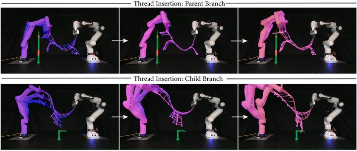

DEFT: Differentiable Branched Discrete Elastic Rods for Modeling Furcated DLOs in Real-Time
IJRR 2026 The International Journal of Robotics Research (accepted)
A differentiable physics model with residual learning for branched cables: momentum-conserving junction constraints, real-time inference above 100 Hz, and planning for shape matching and thread insertion.